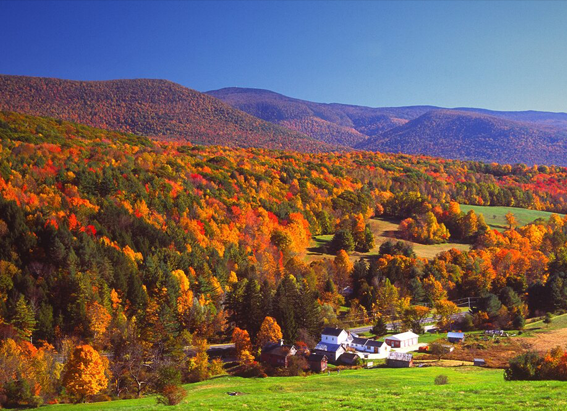

NATIONAL GEOGRAPHIC
The stories I learned walking the Burma Roa perhaps WWII’s greatest engineering feat
HISTORY & CULTURE
It unspools north from Myanmar, or Burma, to the jungled hills rumpling the border of China. Near Tengchong, an ancient Chinese trading post leveled by U.S. bombers in World War II, it bypasses a McDonald’s closed by COVID-19. It rolls on through tile-roofed hamlets where farmers use its tarmac verges to dry their corn. It turns right around high, subtropical mountains that comprise a nature preserve. And it dead-ends in the corrugated palms of retired schoolteacher Xu Ben Zhen.
Eighty-three years ago, when Xu was 17, he was recruited into a legion of 200,000 Chinese laborers who, armed with little more than shovels and rattan baskets, helped save China during the Second World War: They clawed into existence the famous Burma Road. It was 1938. Invading Japanese forces had blockaded all China’s seaports. The besieged nation desperately needed a new backdoor resupply route to survive. Working frantically seven days a week, brigades of men, women, and children from local villages hacked a 717-mile truck road through some of the rainiest, most malarial, and craggy terrain on Earth to bring in American munitions, food, and medicine via British-ruled Burma. About 2,300 roadbuilders died.
“I was like any other country boy, nothing special,” Xu says of his backbreaking contribution to China’s war effort. He is a courtly man who smiles often, as people with impaired hearing sometimes do. He stares down with watery eyes at his wrinkled hands. “It was very hard,” he finally allows.
For the past nine years, I have paced off Ethiopian camel trails, pilgrim roads in Saudi Arabia, and Indian superhighways as part of a global storytelling project aimed at retracing the first human migrations across the planet. History is my guide. Meeting Xu Ben Zhen in Yunnan, China, however, feels like my first encounter with a ghost like facing an actual Roman centurion while hiking a Roman road. I ask the ancient teacher what lessons he draws from a murderous conflict fading now into the realm of folklore.
“You need to develop power to protect the peace,” Xu says rotely.
Sitting in the courtyard of his village house, he waves a pale, century-old hand at a hovering granddaughter. This is the signal to bring tea. He then proudly shows me a f ountain pen. Two visiting U.S. Air Force officers gifted it him years before as a memento of Sino-American friendship during World War II.
Some historians rank the Burma Road as the greatest engineering feat of World War II.
But there were several Burma Roads.
The first was wholly Chinese and distilled from sweat.
One of its senior engineers, Tan Pei-Ying, was initially convinced it would fail. In a now forgotten memoir, The Building of the Burma Road, Tan writes how a vast carpet of gravel was carefully laid, by hand, across three wild mountain ranges, ultimately paving a roadbed 23 feet wide and more than 600 miles long: “The picture of these millions upon millions of stones all put in place individually conveys more clearly than anything I can think of the tremendous mass effort on the part of hundreds of thousands of obscure toilers that went into the construction.”
Hundred-person teams of workers hauled crude limestone rollers to compact the soil, Tan recalled. On steep slopes these five-ton cylinders often broke free from the laborers’ grip. Workers “unable to get out of the way of these rollers were flattened to death . . . This also occasionally happened to the little children who delighted in running downhill ahead of the great unleashed beasts; for, childlike, they like to play while working.”
By the time China’s emergency supply route from Kunming, the capital of Yunnan province, reached the Allied railhead at Lashio, Burma, the road’s toll averaged roughly three souls per mile.
Thousands of trucks steered by hastily-trained Chinese volunteers plied the track in ragged convoys for three years. Then, in 1942, the Japanese Imperial Army invaded Burma and cut the route. And a second mechanized phase of roadbuilding began.
Eager to keep China in the fight against a common enemy, the U.S. deployed thousands of troops mostly segregated units of African Americans to bulldoze a slippery new road from India into China, bypassing the Japanese front line. This newer, 1,079-mile segment of the Burma Road again took its toll: About one U.S. soldier died per mile of construction, mostly from disease and accidents.
“Some people say it was too late,” says Ge Shuya, a World War II historian in Kunming, noting that the American road opened in early 1945, just months before the Japanese surrendered after the atomic bombing of Hiroshima and Nagasaki.
Ge estimates that as few as 60 or 70 U.S. Army trucks made it over a rugged northern branch of the American-built Burma Road in Yunnan called the “Tengchong cut-off.” This is where my walk begins.
Comments :
- john Very good
- john Very good
Leave a Reply
Your email address will not be published. Required fields are marked*
Related posts:
-
 This New York State rail trail isn’t just epic it’s also accessible
This New York State rail trail isn’t just epic it’s also accessible“No bike trail parking” reads the sign, hand-painted in spindly letters on a red barn in pastoral North Chatham, New York. On a Tuesday morning, off a side street few would think to plant a car on
View article -
 New West Virginia mountain biking trails go mild, not wild
New West Virginia mountain biking trails go mild, not wildMountain biking, like other outdoor activities, has surged in popularity during the COVID-19 pandemic. Bike sales went up more than 150 percent in 2020, and some mountain bike trails have experienced
View article -
This trail may be the best way to see New England’s fall colors
Each year, millions flock to the Berkshires in western Massachusetts seeking a couple days of sugar maple tree therapy. The region’s scenic allure peaks in the fall, when the hardwood forests transform into a palette
View article